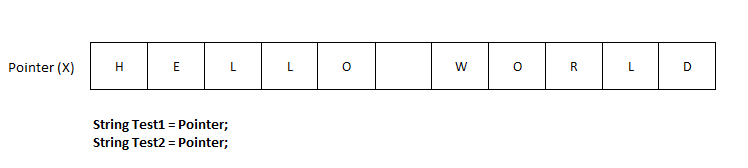

Is a Java string really immutable?
We all know that String is immutable in Java, but check the following code:
String s1 = "Hello World";
String s2 = "Hello World";
String s3 = s1.substring(6);
System.out.println(s1); // Hello World
System.out.println(s2); // Hello World
System.out.println(s3); // World
Field field = String.class.getDeclaredField("value");
field.setAccessible(true);
char[] value = (char[])field.get(s1);
value[6] = 'J';
value[7] = 'a';
value[8] = 'v';
value[9] = 'a';
value[10] = '!';
System.out.println(s1); // Hello Java!
System.out.println(s2); // Hello Java!
System.out.println(s3); // World
Why does this program operate like this? And why is the value of s1 and s2
changed, but not s3?
Answer
String is immutable* but this only means you cannot change it using its
public API.
What you are doing here is circumventing the normal API, using reflection. The same way, you can change the values of enums, change the lookup table used in Integer autoboxing etc.
Now, the reason s1 and s2 change value, is that they both refer to the
same interned string. The compiler does this (as mentioned by other answers).
The reason s3 does not was actually a bit surprising to me, as I thought
it would share the value array (it did in earlier version of Java, before
Java 7u6). However, looking at the source code of String, we can see that
the value character array for a substring is actually copied (using
Arrays.copyOfRange(..)). This is why it goes unchanged.
You can install a SecurityManager, to avoid malicious code to do such
things. But keep in mind that some libraries depend on using these kind of
reflection tricks (typically ORM tools, AOP libraries etc).
*) I initially wrote that Strings aren't really immutable, just "effective immutable". This might be misleading in the current implementation of String, where the value array is indeed marked private final. It's still worth noting, though, that there is no way to declare an array in Java as immutable, so care must be taken not to expose it outside its class, even with the proper access modifiers.
As this topic seems overwhelmingly popular, here's some suggested further reading: Heinz Kabutz's Reflection Madness talk from JavaZone 2009, which covers a lot of the issues in the OP, along with other reflection... well... madness.
It covers why this is sometimes useful. And why, most of the time, you should avoid it. :-)
Suggest
In Java, if two string primitive variables are initialized to the same literal, it assigns the same reference to both variables:
String Test1="Hello World"; String Test2="Hello World"; System.out.println(test1==test2); // true

That is the reason the comparison returns true. The third string is created
using substring() which makes a new string instead of pointing to the same.
When you access a string using reflection, you get the actual pointer:
Field field = String.class.getDeclaredField("value");
field.setAccessible(true);
So change to this will change the string holding a pointer to it, but as s3
is created with a new string due to substring() it would not change.